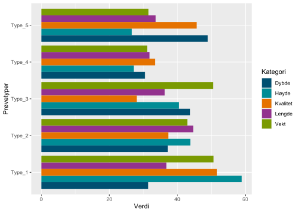

#Slik vises kode-kommentarer
x <- 1:10 * 0.5 + rnorm(10, mean = 1, sd = 2)
y <- 1:10Enter main title here
Enter subtitle here
Enter author here , Enter author here , Enter author here , Enter author here
Siteres som:
Brum, O., Robin, K. 2016. A very good title. NINA Report 1234. Norwegian Institute for Nature Research. http://hdl.handle.net/11250/available from library
Quality reviewers: xx
Responsible signature: Research Manager [to be filled in by the research director] (sign.)
Sammendrag
Enter text here in Norwegian, a short summary of the content. The text in the summary is searchable in databases and online, and is important for the report to be captured by searches.
Sections and empty rows between them are a bit tricky to create in the YAML section, but it can be done like this. Empty rows in the preface can also be created in the same way.
Abstract
Enter text here, a short summary of the content. The text in the summary is searchable in databases and online, and is important for the report to be captured in searches.
1 Introduction
This is a Quarto template for NINA Reports, a further development of the Rmarkdown template from NinaR (Åström 2016). It is primarily intended for use in the statistical program R, for example via https://rstudio.nina.no. Quarto will eventually replace Rmarkdown in Rstudio, and has the advantage of working not only for R, but also for other languages, such as python.
The writing style of producing a NINA report from a script is used to advantage when the report has a large amount of code, or when you want to create a reproducible report. Apart from the sections with code, the template is intended to mimic NINA’s standard template for reports. To collaborate with colleagues who are not familiar with Git or code in general, you can, for example, use trackdown. With this package, the main author can share an updated text version of the document on google drive, where co-authors can edit the text. The changes in the text can then be pushed down to the Quarto document. See more at https://cran.r-project.org/web/packages/trackdown/vignettes/trackdown-workflow.html
2 Procedure
This is required to use the template: * Rstudio (if you are going to use R) * A Tex installation (if you are using pdf output) - For Windows, see http://miktex.org/ - For Mac, see http://tug.org/mactex/ - For Linux, installere tex-live * NinaR, to make it easier to use e.g. NINA colors (see http://www.github.com/NINAnor/NinaR)
The easiest way is to use the rstudio servers http://rstudio.nina.no, where everything is (should be) installed.
Use the template e.g. in rstudio.nina.no by typing this in the terminal window: quarto use template NINAnor/quarto_nina_report. This will create a subfolder with the files you want to work with. At the moment, quarto templates are not available via Rstudio’s menus, but this will probably be improved in the future.
At the top of the template (not shown in the PDF) there is a so-called “YAML section” where various mandatory things must be entered. A closed PDF can be created by writing “yes” after secure_pdf. Line numbers for review are produced through line_numbering: yes. The self-reference on page 3 is manually entered by self-ref: in the YAML section.
Only the pdf output will create a report that is completely similar to a regular NINA report. A big advantage of using Quarto is that you can switch between different formats without changing templates, or changing formats for figure captions and references, etc. But note that the html and docx templates are under development and do not mimic a NINA report.
Use only one output at a time, by commenting out the ones you do not use in the YAML section. There are many “options” in Quarto that are not shown here. Search online and try your hand at it.
References can be included in two ways. For example, we can refer to Pedersen et al. (2016) in the text, or like this (Pedersen et al. 2016). The style of the references depends on whether they are classified as the correct type, for example as an article (Adams 1993).
2.1 Test sub sub heading
To create a “pagebreak”, for example between different chapters, type \newpage. \clearpage works in a similar way, but then you force a placement of all images up to now, and then they can often end up on their own page. Try it out.
2.2 One for sub sub heading
This template is still not perfect, but has been used for a project for the Norwegian Environment Agency and approved by the library. Questions and opinions can be sent to Jens Åström.
It can be faster to write reports in this format, but there are often some minor formatting fixes at the end. The placement of images can be controlled to some extent by changing their size (e.g. out.width or fig.width), or by overriding the position (e.g. fig.pos = “!hb”). But not everything can be controlled completely, so for now you have to accept some placements.
2.2.1 En sub sub sub heding
This is the lowest level of headers you should use.
2.2.1.1 A level 4 header
This is not actually used in the NINA template.
3 Equations
Equations can be written using LaTeX code.
\[\tilde f(\omega)=\frac{1}{2\pi} \int_{-\infty}^\infty f(x)e^{-i\omega x}\,dx\,,\]
4 Results
R code can be added as usual. The color scheme can be changed through the highlight: xxx Yaml section at the start of the document.
Quarto is so-called “coding language-agnostic” and other programming languages can be used. For example Bash:
for (( n=1; n<=5; n++ ))
do
echo "Rad $n"
doneRad 1
Rad 2
Rad 3
Rad 4
Rad 5Or Python, like this script to find prime numbers:
lower = 1
upper = 4
for num in range(lower, upper + 1):
if num > 1:
for i in range(2, num):
if (num % i) == 0:
break
else:
print(num)2
3Tables from R can be created through the xtable, kable or DT::datatable packages, depending on the output format. Here is an example of a table with model estimates from a simple model. We use quarto variables to switch between table formats, depending on which output format we are rendering. This is not needed if you are only going to create a format. You can also refer to a table, for example I am now referring to Table 1.
mod1<-glm(y~x)
to_table <- round(summary(mod1)$coefficients, 3)
if(names(rmarkdown::metadata$format) == "ninareport-pdf"){
xtable(to_table,
caption="Tabell laget med xtable.")
} else if(names(rmarkdown::metadata$format) == "ninareport-html"){
DT::datatable(to_table,
caption="Tabell laget med xtable.",
style = "bootstrap",
options = list(
pageLength = 10,
autoWidth = TRUE,
columnDefs = list(list(width = "100px",
targets = 1))
)
)
} else {
knitr::kable(to_table,
caption="Tabell laget med xtable.")
}Figures work in the usual way. Figure text and “label” that can be referenced are written as quarto comments in the code block. Figure 1 shows an example of using NINA’s logo colors via the function NinaR::NinaPalette.
plot.mat <- matrix(rnorm(25, 40, sd=10), ncol=5, dimnames = list(c("Sportsfisker", "Elveeier", "Oppleid", "Fisket", "Poseidon"), c("Lakselus", "Utsetting", " Strengere restriksjoner", "Fysiske tiltak", "Flaks")))
plot.mat <- tibble::tibble(Verdi = rnorm(n = 25,
mean = 40,
sd = 10),
Prøvetyper = rep(c("Type_1",
"Type_2",
"Type_3",
"Type_4",
"Type_5"),
each = 5),
Kategori = rep(c("Lengde",
"Høyde",
"Dybde",
"Vekt",
"Kvalitet"),
times = 5)
)
ggplot(plot.mat) +
geom_bar(aes(x = Verdi, y = Prøvetyper, fill = Kategori),
stat = "identity",
position = 'dodge') +
scale_fill_nina()

Existing images can also be added through regular markdown syntax. These will be centered. Note that eps files are specified without a file extension.

If you need more options for defining the size and placement of a finished image, you can also include it with “include_graphics”.
We can also refer to images, for example Figure 2, which are included in the template. Sections can be referenced by specifying a reference in the heading {#section}. For example, I am now referencing the introduction in Chapter 1.
5 References
References
Adams, P. 1993. The title of the work. The name of the journal 4(2): 201–213.
Åström, J. 2016. NinaR: Document templates and functions for NINA. http://github.com/NINAnor/NinaR.
Pedersen, H.C., Follestad, A., Gjershaug, J.O., and Nilsen, E.B. 2016. Statusoversikt for jaktbart småvilt. NINA rapport 1178. Norsk institutt for naturforskning.